Kingdom Hearts: Keyblades
Kingdom Key
Kingdom Hearts
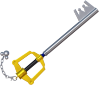The Kingdom Key is the classic, iconic keyblade wielded by Sora. Featuring a silver blade and a gold hilt, it resembles a classic skeleton key and has balanced stats without unique abilities. Its simplicity symbolizes Sora’s natural strength and heart.
Oathkeeper and Oblivion
Kingdom Hearts
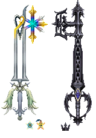Oathkeeper and Oblivion are two keyblades heavily tied to Sora’s friendships, especially with Kairi and Riku. Oathkeeper, representing Sora’s bond with Kairi, emphasizes magic abilities, while Oblivion, connected to Riku, focuses on strength and darkness-based powers. Both are symbols of Sora’s journey and the relationships that guide him.
Ultima Weapon
Kingdom Hearts
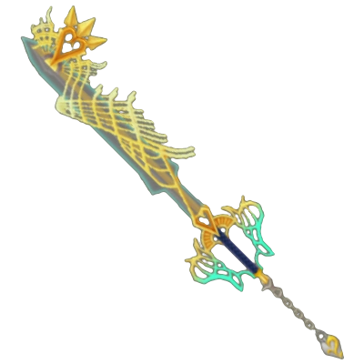The Ultima Weapon is often one of the most powerful keyblades available in each Kingdom Hearts game. Known for its high stats in both strength and magic, the Ultima Weapon typically requires rare materials to craft, making it a challenge for dedicated players to unlock. Its impressive design and power reflect its status as a reward for those who master the game.
Pumpkinhead
Kingdom Hearts
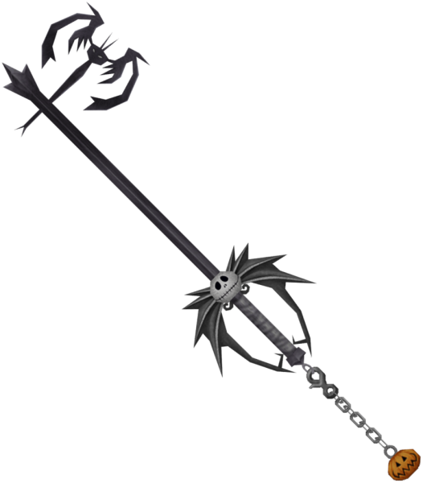In Halloween Town, Sora finds the Pumpkinhead keyblade, a spooky weapon with an elongated design featuring Halloween-themed details. This keyblade enhances Sora’s combo abilities and provides a slight boost to strength, fitting perfectly with the Nightmare Before Christmas world’s eerie atmosphere.
Decisive Pumpkin
Kingdom Hearts II
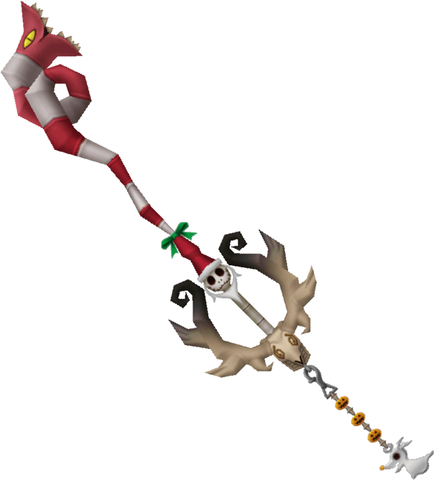Another Halloween Town-inspired keyblade is the Decisive Pumpkin, decorated with a jack-o'-lantern motif. This keyblade excels in enhancing combo finishers and is particularly powerful in Kingdom Hearts II when paired with Sora’s Valor Form, making it a favorite for fans who focus on combo attacks.
Lionheart
Kingdom Hearts
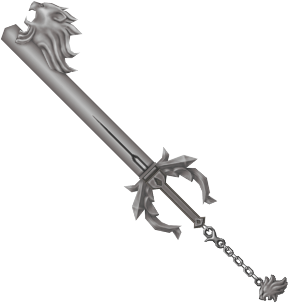Inspired by Final Fantasy VIII, Lionheart is a tribute to Squall Leonhart (known as Leon in Kingdom Hearts). With balanced stats and an enhanced critical hit rate, Lionheart is a powerful weapon that honors Squall’s strength and resilience.
Lady Luck
Kingdom Hearts
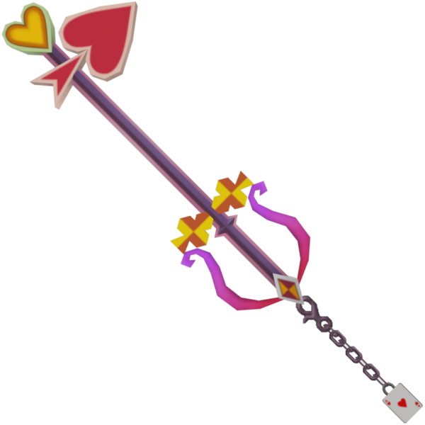Found in Wonderland, Lady Luck is a whimsical keyblade with a design inspired by playing cards. This keyblade boosts Sora’s magic abilities and MP, making it ideal for players who prefer a magic-focused play style.
Two Become One
Kingdom Hearts II Final Mix
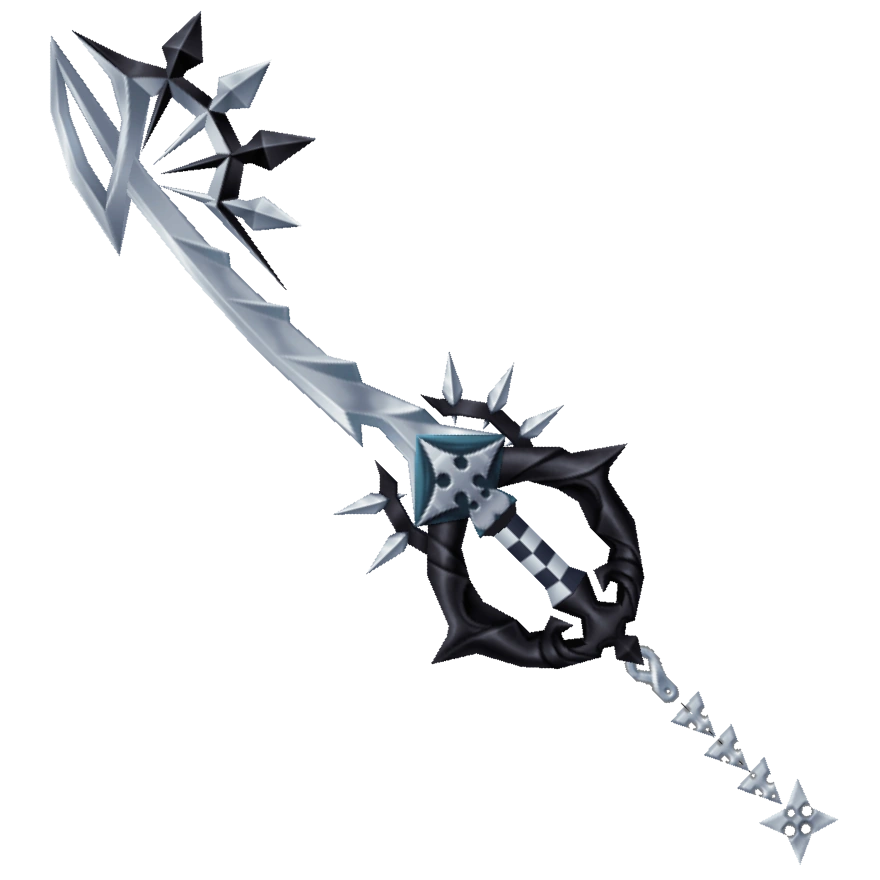Two Become One is a unique keyblade symbolizing the duality of light and darkness, closely linked to Roxas. With high attack power and the ability to boost drive form transformations, Two Become One reflects Roxas’s complex identity as both a part of Sora and a member of Organization XIII.
Way to the Dawn
Kingdom Hearts II
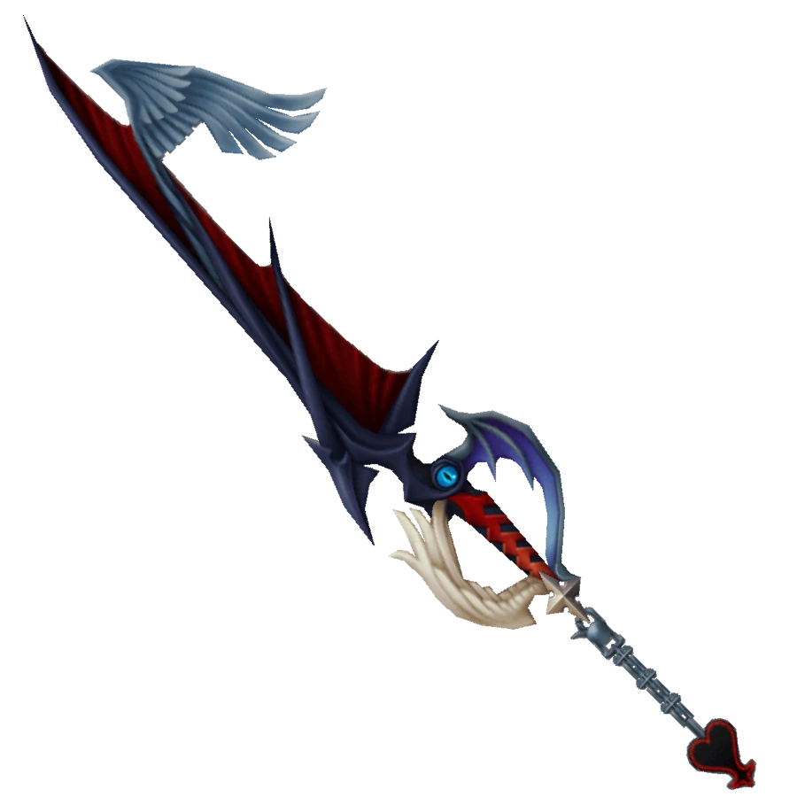Way to the Dawn is Riku’s primary keyblade, designed to embody his journey of redemption. Combining elements of both light and darkness, Way to the Dawn mirrors Riku’s character arc, giving him a weapon that symbolizes his strength and inner balance.
Master's Defender
Kingdom Hearts: Birth by Sleep
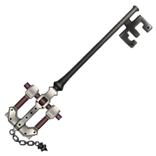Master’s Defender is a keyblade originally wielded by Eraqus and passed on to Aqua. This keyblade is a simple, classic design with balanced stats, symbolizing a master keyblade wielder’s duty to protect the worlds.
Star Seeker
Kingdom Hearts II
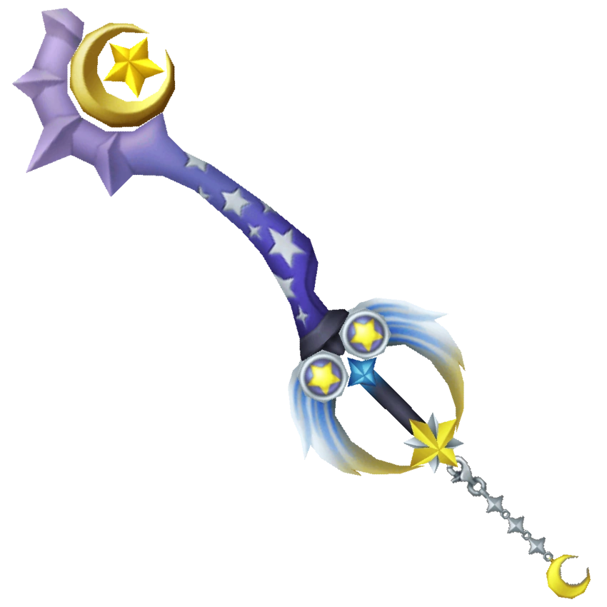The Star Seeker keyblade, associated with Mickey and found in Yen Sid’s tower, has a blue and starry appearance. Known for enhancing magic and combos, Star Seeker is a powerful weapon for players focused on magical abilities.
Fenrir
Kingdom Hearts II
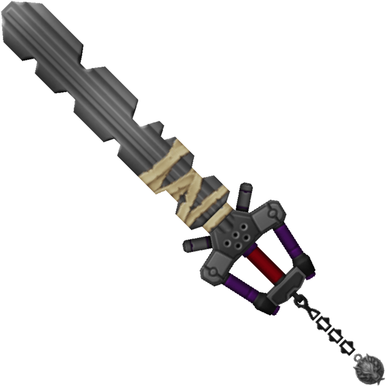Inspired by Cloud Strife from Final Fantasy VII, Fenrir has a rugged, industrial look that resembles a chainsaw. Known for high attack power but reduced magic capabilities, this keyblade suits a more brute-force combat style, matching Cloud’s own aesthetic and strength.